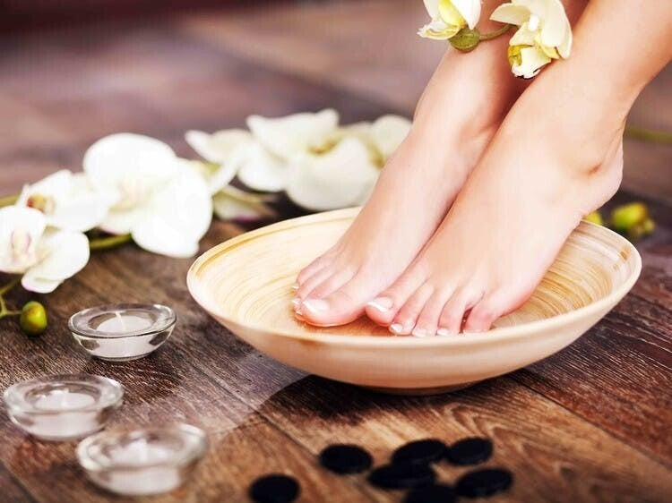
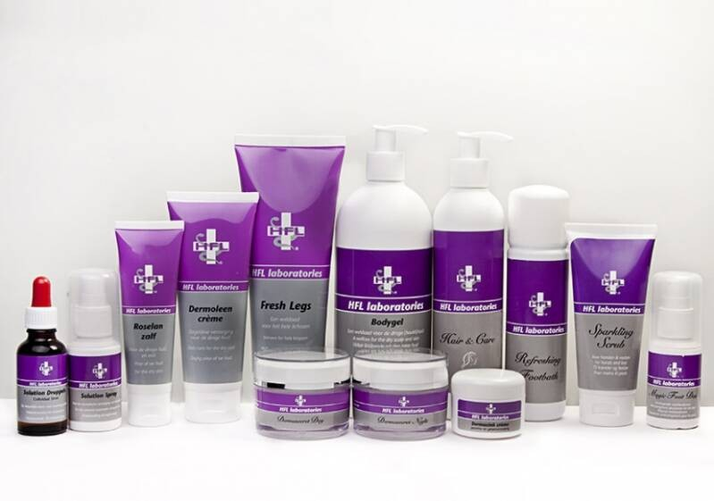
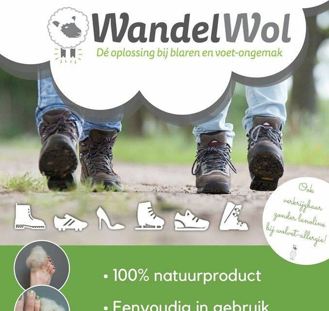
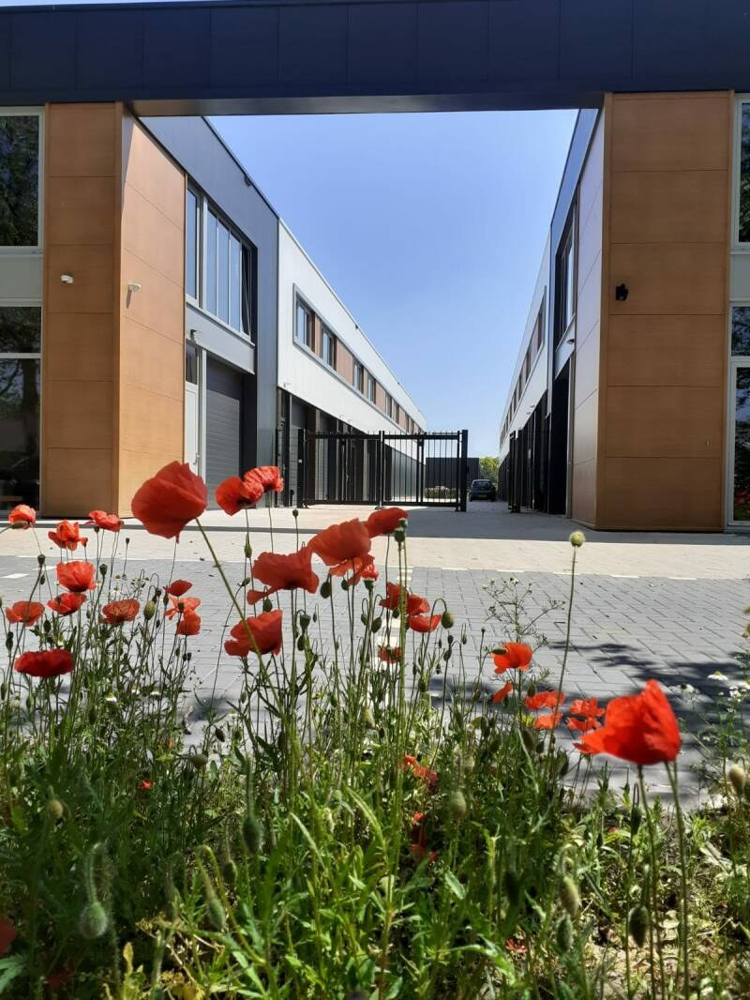

Voetverzorging
Een regelmatige behandeling helpt klachten verminderen en problemen voorkomen. Ook zonder klachten bent u welkom.

Medisch pedicure in Roosendaal, voor voeten met en zonder klachten. Naast de verzorging kijken we samen naar de oorzaak van uw klachten en zoeken we een passende oplossing.
Bij Feet-Care kunt u terecht voor de verzorging van uw voeten, met kleine en grotere klachten en vragen.
Een regelmatige behandeling helpt klachten verminderen en problemen voorkomen. Ook zonder klachten bent u welkom.
Gespecialiseerd in kwetsbare voeten, bijvoorbeeld door diabetes, reuma, spasticiteit of ouderdom.
Een beschadigde nagel herstellen, of een ingroeiende nagel bijsturen met een nagelbeugel.
Een op maat gemaakte orthese, of vilt om drukplekken op de voet te ontlasten.
Klachten aan uw voeten hebben vaak een oorzaak. Daarom kijken we verder dan de verzorging alleen.
Het gaat erom dat u met een tevreden gevoel een behandeling heeft gehad, waarbij u centraal staat.Masja Adriaansen, medisch pedicure
U krijgt bij Feet-Care advies over welke producten u het beste kunt gebruiken, ook als het niet duur hoeft te zijn.

Verzorgingsproducten voor uw voeten, verkrijgbaar in de praktijk.

100% natuurproduct bij blaren en voetongemak.

Feet-Care is de praktijk van Masja Adriaansen, medisch pedicure in Roosendaal. Tijdens de opleiding heeft zij zich gespecialiseerd in de behandeling van risicovoeten: kwetsbare voeten door bijvoorbeeld diabetes, reuma of ouderdom.
Maar ook als u gewoon uw voeten goed wilt laten verzorgen, bent u van harte welkom.
Bel of stuur een WhatsApp-bericht, dan plannen we samen een moment dat u goed uitkomt.